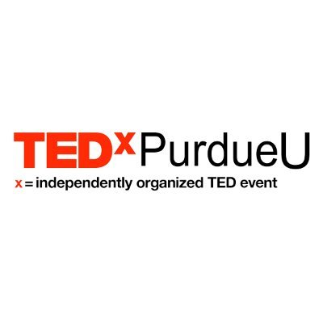
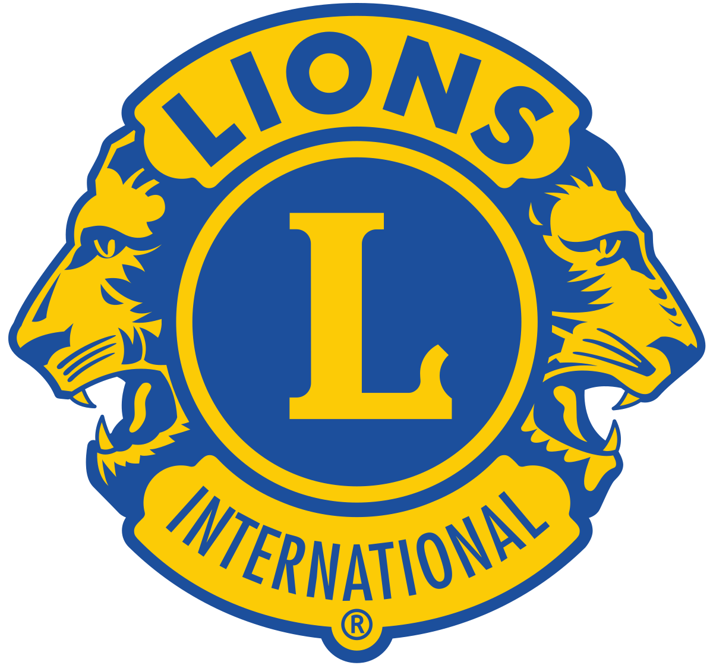

Leadership and Volunteering
My volunteer experience is listed below:
ASME Standards Development Committee
MAM Subcommittee on Robotic Arms (Manipulators)
Feb 2021 – Present
• Contributed to the development and maintenance of standards for robotic arms.
• Actively participated in committee discussions and work assignments.
Columbia University Task Force on Inclusion and Belonging
Task Force Member
Sep 2020 – Apr 2021
• Cultivated an equitable and inclusive campus culture to support fellow students' sense of inclusion and belonging by using active listening strategies, building awareness, interrupting exclusion and promoting self-care.
• Developed responsive strategies to bring together people with different identities, backgrounds and experiences.
• Learned to communicate across differences.
Heartfulness Institute
Youth Program Coordinator
Jun 2019 – Apr 2021
• Started a new program to engage the youth to be more involved in the community.
• Outreached within the community and brought together people of all social, educational and economic backgrounds, on the basis of spirituality.
• Conduct discussions with members regarding the practice.
Purdue Alumni Recruitment for Tomorrow
Alumni Representative
Jan 2020 – Aug 2020
• As a Purdue Alumnus, I represented Purdue Engineering at college fairs and attended information sessions to share my undergraduate experience with prospective and admitted students.

Purdue International Programs
Multinational Integration Xchange (MIX) Team Leader
Jan 2014 – May 2015
• Mentored student leaders and facilitated team building activities to grow leadership abilities in students.
• Utilized skills gained through a year-long leadership training program to execute activities and events as part of an orientation program.
• Applied learnings from previous years to reorganize the orientation program.

TEDxPurdueU
Volunteer
Sep 2012 – May 2013
• Event planning and management.
